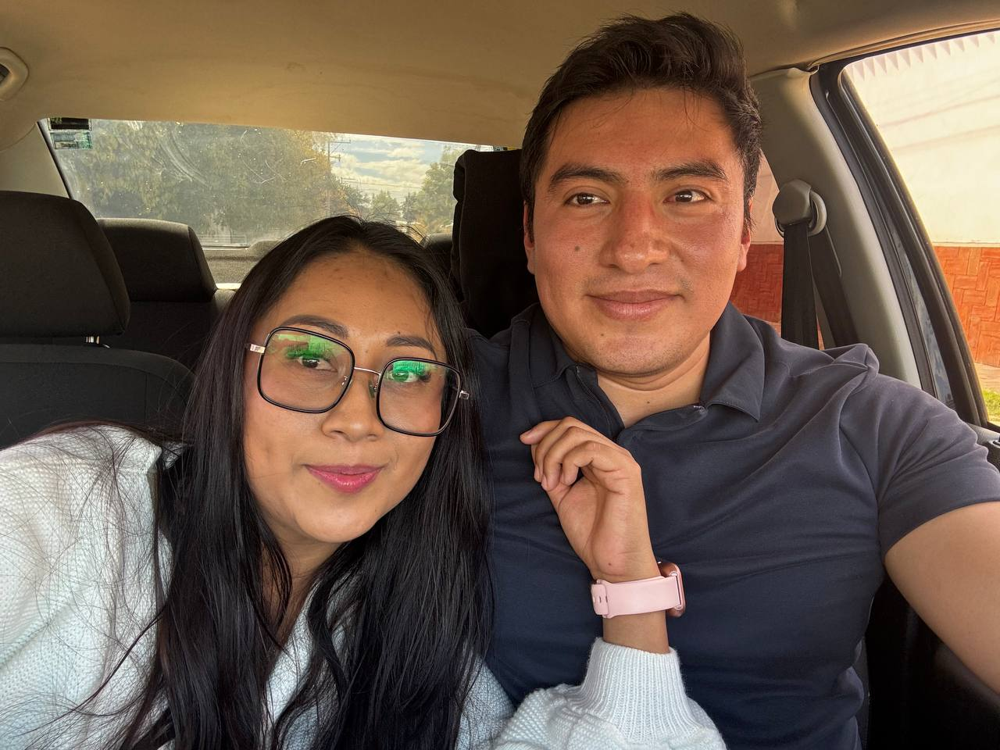
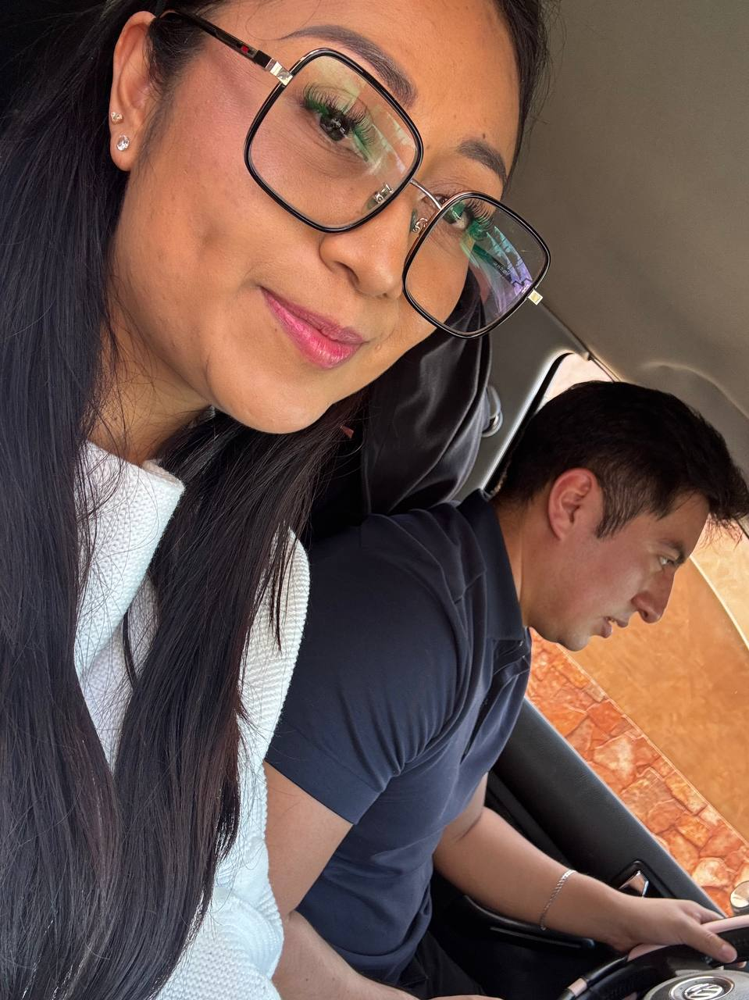

commit 0009
Date: 11 Jan 2026
🟡 Learning to Drive
🟢 Git Message
feat: postponed plans finally executed
⚪ Story
Después de varias semanas diciendo que algún día practicaríamos manejar, por fin llegó ese momento.
Habíamos quedado de ir a desayunar.
Era uno de esos planes sencillos que ya se habían vuelto parte de nuestra rutina.
Cuando terminamos de desayunar, sin haberlo planeado, decidimos aprovechar el tiempo para practicar un poco al volante.
Querías perder un poco el miedo a manejar nuevamente.
Fuimos a unas calles tranquilas cerca del lugar donde habíamos desayunado.
Recuerdo que estabas un poco nervioso.
Todo duró muy poco.
No fue una clase de manejo.
Fue más bien un pequeño intento.
Entre risas, algunas indicaciones y paciencia, poco a poco comenzaste a sentirte más cómodo.
Después fuimos a tu casa y seguimos pasando el día juntos.
En ese momento no pensé que estuviera enseñándote algo importante.
Simplemente era algo que yo sabía hacer y que podía compartir contigo.
Con el tiempo entendí que la confianza también se construye así.
Sentándose en el asiento del copiloto.
Y descubriendo que algunos de los mejores recuerdos empiezan con un simple "vamos a intentarlo".
🟣 Developer Notes
Driving lesson initialized.
Confidence continued to grow.
Shared skills archived.
🟢 Impact on Project
First driving lesson completed.
Trust level increased.
Another ordinary day became a lasting memory.
🟢 Commit Status
✔ Completed
✔ Reviewed
✔ Ready for Release
🖼 Recuerdos

Instructora por un día. Sin certificado, pero con mucha paciencia.

Sin evidencia, no se aprendió a manejar. Aquí está la prueba.